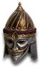
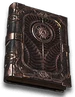

Set
Horazon's Splendor
5 items, level 67, Warlock

Horazon's Countenance
Demonhead
Defense: 101-154
Required Level: 62
+X% Bonus to Attack Rating (X = 0.25 x character level)
+1 to Warlock Skill Levels
+10-20 to Strength
Magic Damage Reduced By 7-10
(2 items) +5% Increased Maximum Life
(4 items) +15 to Strength

Horazon's Dominion
Russet Armor
Defense: 225-243
Required Level: 55
++2 to Demon Skills
+75-100% Enhanced Defense
+75-100 to Mana
+15-25% Cold Resistance
+15-25% Fire Resistance
+15-25% Lightning Resistance
(2 items) +25% Poison Resistance
(4 items) +15 to Vitality
(6 items) +15% Physical Damage Reduction

Horazon's Hold
Demonhide Gloves
Defense: 28-35
Required Level: 48
+10% Chance of Crushing Blow
+95-150 to Attack Rating
+10-15 to Dexterity
Adds 140-270 Fire Damage
+30-40 to Life
(2 items) +30% Increased Attack Speed
(3 items) +7% Mana stolen per hit
(4 items) +7% Life stolen per hit

Horazon's Legacy
Mirrored Boots
Defense: 59-68
Required Level: 67
+30% Faster Run/Walk Speed
+10-15 to Strength
+10-15 to Dexterity
+20-30% Magic Resistance
+1 Cannot Be Frozen
Requirements Increased By -30%
(2 items) +10% Faster Run/Walk Speed

Horazon's Secrets
Occult Codex
Defense: 98-142
Chance to Block: 8%
Required Level: 57
++2 to Eldritch Skills
+30% Faster Hit Recovery
20% Increased Chance of Blocking
+20-30 to Vitality
+30-50 to Life
(2 items) Poison Length Reduced by 75%
(3 items) -25% to Enemy Fire Resistance
(4 items) +15 to Energy
Set bonuses
- 2 items: +20 to Dexterity
- 3 items: +30 to Energy
- 4 items: +300 Defense
Full set
- +50% to All Resistances
- +3 to Warlock Skill Levels
- +350% Enhanced Weapon Damage
- +100% Chance Items Roll Magic or Better
- +30 to Enchant